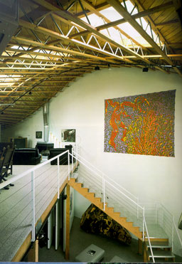
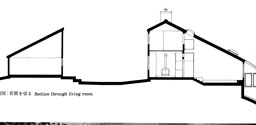
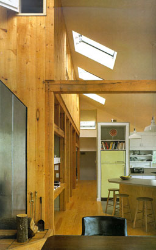

|
Hopper Residence, Venice, California, 1986-1987 |
The client wanted a big hall, below enough room to exhibit large works of art and above an apartment with maximal sight lines and a uniform distribution of natural light. The architect has made big windows in the ceiling on a regular distance to accomplish a natural and uniform distribution of daylight. Just like in the simulation of variant S0 the distribution is uniform but the luminance of the ceiling is low which gives an unnatural impression and a high contrast between the windows in the roof and the ceiling. A possible solution is to lit up the ceiling with artificial light.
|
 |
|
Stanwood House near Hartford, Connecticut, 1977-1978, Charles
Moore and Mark SimonGA Houses 7 RTG 78 HOU
|
The section on the left shows the house consists
of two parts: The garage-barn and the real house. The real house
steps down the hill which causes many levels in the interior.
The house is designed to catch as much daylight and solar-heat
as possible. From the house nice distant views are realised to
the south and east. The photograph on the right shows the interior
of the open kitchen. Three windows in the roof illuminate the
room in a uniform way. The roof is sloping and the windows are
placed nearby the left wall. In that way daylight enters also
through the windows in the left wall into the bedrooms on the
second floor. On the section on the left this is clearly to be
seen. |
 |